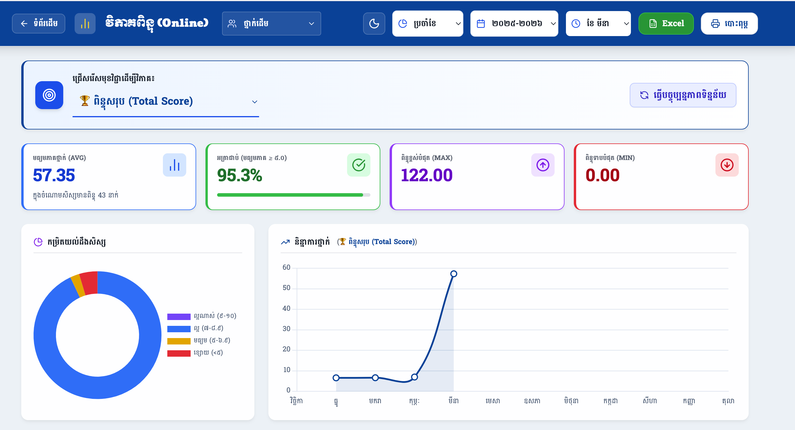
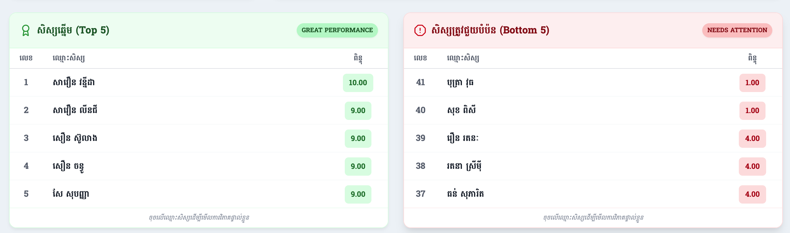
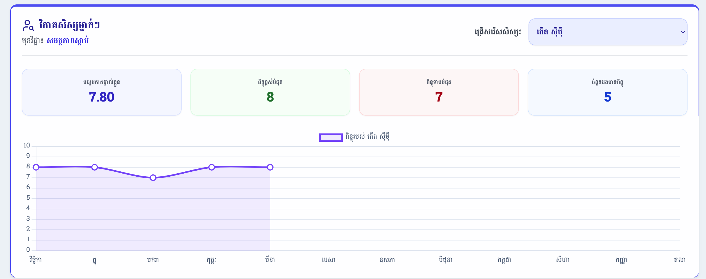

ការពន្យល់យ៉ាងលម្អិតអំពីរបៀបអានទិន្នន័យ ក្រាប និងរូបមន្តវាយតម្លៃវឌ្ឍនភាពសិស្ស ដើម្បីជួយលោកគ្រូ អ្នកគ្រូវិភាគបានយ៉ាងងាយស្រួល។
ផ្ទាំងខាងក្រោមនេះបង្ហាញពីព័ត៌មានជារួមអំពីមុខវិជ្ជាណាមួយ ដែលលោកអ្នកបានជ្រើសរើស។ តើប្រអប់ពណ៌នីមួយៗមានន័យយ៉ាងណា?

តួលេខនេះប្រាប់ថាតើ ជាមធ្យមសិស្សក្នុងថ្នាក់ទាំងមូលរៀនបានកម្រិតណា លើមុខវិជ្ជានេះ។ បើលេខនេះខ្ពស់ មានន័យថាគ្រូបង្រៀនបានល្អ សិស្សយល់ច្រើន។ បើលេខនេះទាប គ្រូប្រហែលជាត្រូវប្តូរវិធីសាស្ត្របង្រៀន។
តួលេខនេះប្រាប់ថា តើមានសិស្សប៉ុន្មានភាគរយដែលរៀនទាន់ (បានមធ្យមភាគចាប់ពី ៥.០ ឡើងទៅ)។ ដូចក្នុងរូបភាពបង្ហាញ ៩៥.៣% មានន័យថាសិស្សស្ទើរតែពេញមួយថ្នាក់សុទ្ធតែរៀនចេះមុខវិជ្ជានេះ។
ប្រាប់ពីពិន្ទុរបស់សិស្សដែលរៀនពូកែជាងគេបង្អស់ក្នុងថ្នាក់ សម្រាប់ខែនេះ។
ប្រាប់ពីពិន្ទុរបស់សិស្សដែលខ្សោយជាងគេបង្អស់។ ជាសញ្ញាអាសន្នអោយគ្រូដឹងថាមានសិស្សកំពុងធ្លាក់ដុនដាបខ្លាំងកម្រិតណា។
ក្រាបនេះមានតួនាទីកាត់សិស្សជា ៤ ចំណែក ដើម្បីអោយគ្រូមើលដឹងភ្លាមៗថា សិស្សភាគច្រើននៅក្នុងថ្នាក់ជាសិស្សកម្រិតណា៖
ក្រាបខ្សែបន្ទាត់នេះ បង្ហាញពី មធ្យមភាគរបស់ថ្នាក់ទាំងមូលតាំងពីខែទី១ ដល់ខែបច្ចុប្បន្ន។
ផ្នែកនេះប្រព័ន្ធបានទាញយកសិស្សដែលមានពិន្ទុខ្ពស់ជាងគេ ៥នាក់ និងទាបជាងគេ ៥នាក់ មកបង្ហាញដោយស្វ័យប្រវត្តិ៖

វាជួយគ្រូអោយស្គាល់សិស្សដែលពូកែ។ គ្រូអាច ផ្តល់ជារង្វាន់ លើកទឹកចិត្ត ឬចាត់តាំងពួកគេអោយធ្វើជាប្រធានក្រុម ដើម្បីជួយបង្រៀនមិត្តភក្តិផ្សេងទៀតដែលរៀនមិនទាន់។
វាជាតារាង សង្គ្រោះបន្ទាន់! សិស្ស ៥នាក់នេះគឺជាអ្នកដែលត្រូវការជំនួយពីគ្រូខ្លាំងជាងគេ។ គ្រូត្រូវហៅពួកគេមកណែនាំបន្ថែម ហៅមាតាបិតាមកជួប ឬរៀបចំការបំប៉នក្រៅម៉ោងជាបន្ទាន់។
ជារឿយៗ គ្រូត្រូវវាយតម្លៃថាតើសិស្ស "ម្នាក់នេះ" រៀនមានការរីកចម្រើនដែរឬទេ បើធៀបនឹងខែមុនៗរបស់គេ។ ផ្នែកនេះបង្កើតឡើងដើម្បីដោះស្រាយបញ្ហានេះ៖

ផ្ទុយពីប្រអប់នៅផ្នែកទី១ ទិន្នន័យត្រង់នេះគឺសម្រាប់តែសិស្សម្នាក់គត់ ដែលអ្នកបានរើសប៉ុណ្ណោះ។
- មធ្យមភាគផ្ទាល់ខ្លួន (៧.៨០)៖ បញ្ជាក់ថាចាប់តាំងពីដើមឆ្នាំមក សិស្សម្នាក់នេះរៀនមុខវិជ្ជានេះបានមធ្យម ៧.៨០។
- ពិន្ទុខ្ពស់បំផុត (៨) និងទាបបំផុត (៧)៖ បង្ហាញពីគម្លាតពិន្ទុរបស់គាត់។ បើគម្លាតនេះតូច (ឧ. ៧ និង ៨) មានន័យថាគាត់រៀនមានលំនឹង។ បើគម្លាតធំ (ឧ. ៤ និង ១០) មានន័យថាគាត់រៀនមិនទៀងទាត់ ជួនចេះ ជួនអត់។
ខ្សែបន្ទាត់ពណ៌ស្វាយក្នុងរូបភាពទី៣ បង្ហាញពីប្រវត្តិពិន្ទុរបស់ "កើត ស៊ីម៉ី"។
យើងឃើញថាចាប់ពីខែវិច្ឆិកា ដល់ខែធ្នូ គាត់ទទួលបាន ៨ ស្មើគ្នា។ លុះដល់ខែមករា ពិន្ទុគាត់ធ្លាក់មក ៧ តែគាត់ខិតខំវិញនៅខែកុម្ភៈ និងមីនា រហូតឡើងបាន ៨ វិញ។
ចំណាំ៖ ក្រាបនេះមានប្រយោជន៍ខ្លាំងណាស់ ពេលហៅមាតាបិតាសិស្សមកប្រជុំ គ្រូគ្រាន់តែបង្ហាញក្រាបនេះ ពួកគាត់នឹងយល់ភ្លាមពីការសិក្សារបស់កូន។
ដើម្បីស្វែងយល់កាន់តែច្បាស់ និងការអនុវត្តជាក់ស្តែងពីរបៀបបោះពុម្ពតារាងចំណាត់ថ្នាក់នេះ សូមទស្សនាវីដេអូណែនាំខាងក្រោម៖